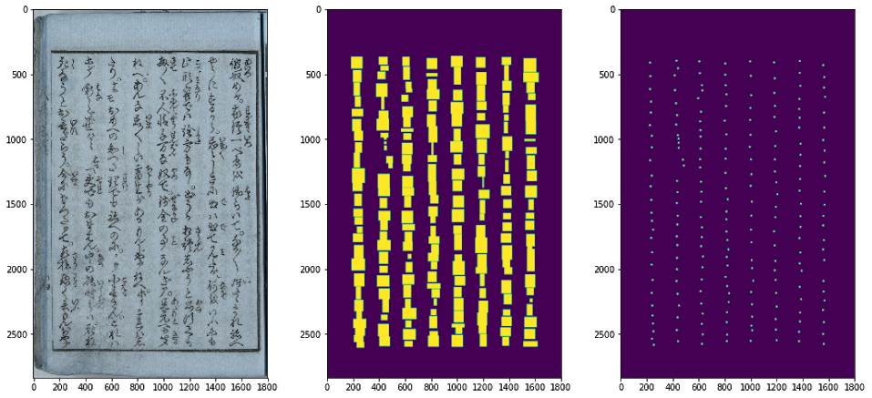
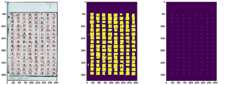
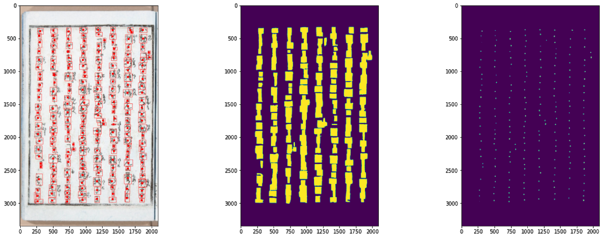
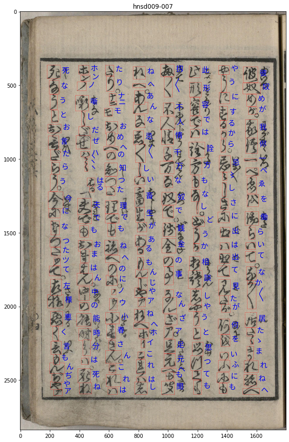
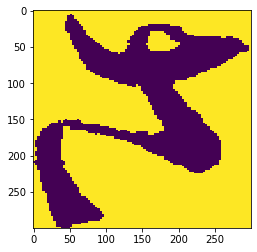
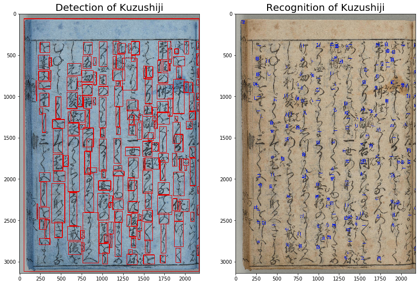
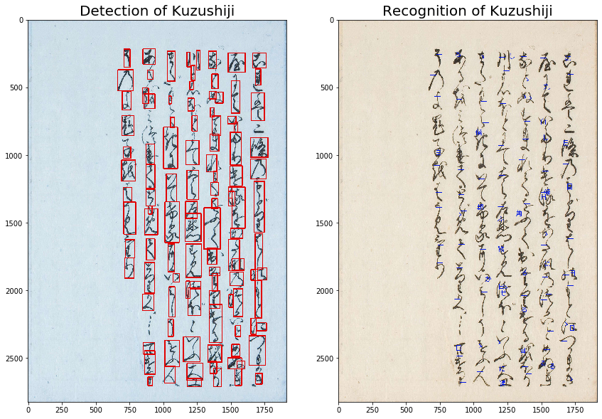
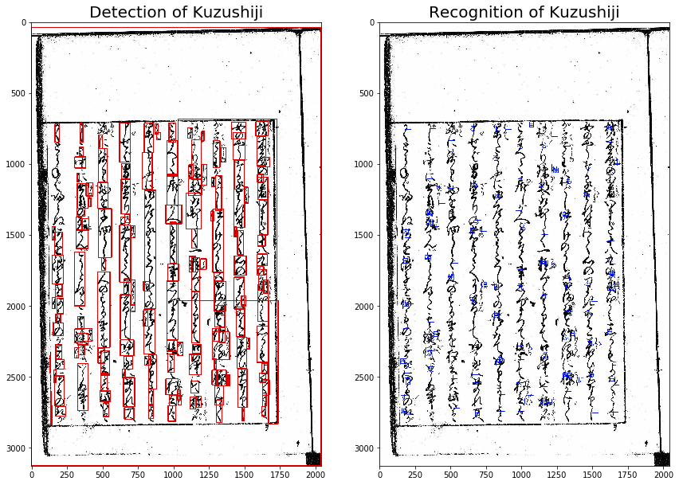

Given an image, we propose a deep learning model to detect Kuzushiji characters present on the page and transcribe them to contemporary Kanji. We use U-Nets to detect the Kuzushiji, i.e. find the centers and draw bounding boxes around the characters. We propose a CNN-based approach for Kuzushiji recognition. We compare our approach against two other approaches. The first is a classical CV approach using SIFT features for detection and an SVM for recognition. The second is a more complex approach that uses image contours for detection and CNNs for recognition.
Kuzushiji, is an old Japanese cursive writing style. Over 3 million books, written in Kuzushiji are preserved today, waiting to be transcribed. However, only 0.01% of the native Japanese population can read Kuzushiji, making the process of manual translation hard.
Large number of character types: The total number of unique characters in the Kuzushiji dataset is over 4300 and the dataset is highly unbalanced.
Hentaigana: Many characters which can only be written a single way in modern Japanese can be written in many different ways in Kuzushiji.
Similarity between characters: A few characters in Kuzushiji look very similar and it is hard to tell what character it is without considering the above character as context.
Connectedness and overlap between characters: Kuzushiji was written in a cursive script, and hence in many cases, characters are connected or overlap which can make the recognition task difficult.
Various layouts: The layout of Kuzushiji characters (while normally arranged into columns) does not follow a single simple rule, so it is not always trivial to express the characters as a sequence.
The project is divided into 3 main stages.
We use the Kuzushiji Recognition dataset from Kaggle. It consists of 38000 pages, with over 600,000 kuzushiji characters in total. There are over 43,000 different characters overall.
For detection, we do a standard train-test split of 90% — 10%. For recognition, we use a 75% — 25% split.
The dataset contains ground-truth Unicode values for each character, as well as bounding boxes for every character.
For the baseline model, we use Contour Detection from OpenCV. To further get better detection, we use the U-Net approach.
Implementation details: The U-net consists of 5 pairs of downsampling and upscaling layers, with skip connections from the downsampling layer to its corresponding upscaling layer.
The output of this network is a binary classification over each pixel, as to whether it belongs to a character or not. Thus, it forms a mask over the characters in the image.
We use the contours of the mask to calculate the center-point of each mask.
We also draw a bounding box by drawing a rectangle around the extremes of each mask-blob along with a small margin.
These bounding boxes are compared with the ground-truth bounding boxes, using a combination of the dice overlap loss and binary cross-entropy loss.
Training
The model is trained for 30 epochs, with the Adam optimizer. We see a steady decline in the training error, with a cumulative validation loss of ~0.18, from 0.6
Metrics:
We judge the accuracy of the U-Net detection using a modified version of the F-1 score from the official repository. Our modified score only checks for detection and not recognition.
For the contours + CNN approach, we use the full F-1 score for evaluation.
Evaluation:
We evaluate the model on the test set. We see precision of 97.22%, recall of 96.95% and F-1 score of 0.95 This is opposed to the baseline F-1 score of 0.72 from the naive contour detection method.
Setup:
We judge the accuracy of the U-Net detection using a modified version of the F-1 score from the official repository. Our modified score only checks for detection and not recognition.
https://www.kaggle.com/basu369victor/kuzushiji-recognition-just-like-digit-recognition/output
This approach has 3 main steps:
Training:
The CNN is trained for 32 epochs, with the Adam optimizer. We see that training and validation loss decrease steadily and start stagnating around 30 epochs.
Evaluation:
We evaluate the character detection on the test set. The naive contour detection method achieves a baseline F-1 score of 0.72.
The character recognition using CNN achieves an F-1 score of 0.8264 on the validation set after 32 epochs.
Input:
Output: Success
Failure
As we can see from the image in the botton left, the U-Net seems to be biased towards the vertically aligned text and completely misses any text that does not adhere to the global vertical order.
Our input image in training sample looks like:
After segmentation of bounding boxes and thresholding, we get :
On using novel images for character detection(using contours) and recognition(using trained CNN):
  We see that the baseline detection approach does not work too well. This is because the detection problem is hard. Since the pages contain the necessary text, as well as images, text that bleeds through from other pages, and other noise, it is difficult for a regular contour detection algorithm to work well.
Additionally, the data contains 43,000+ different classes of text, it is hard for a simple CNN detector to accurately segment out the characters. Hence, we use a more sophisticated model, i.e. the U-net
In the future, we can use a more sophisticated approach, like Kuronet, and have an end-to-end approach for directly recognizing the characters.